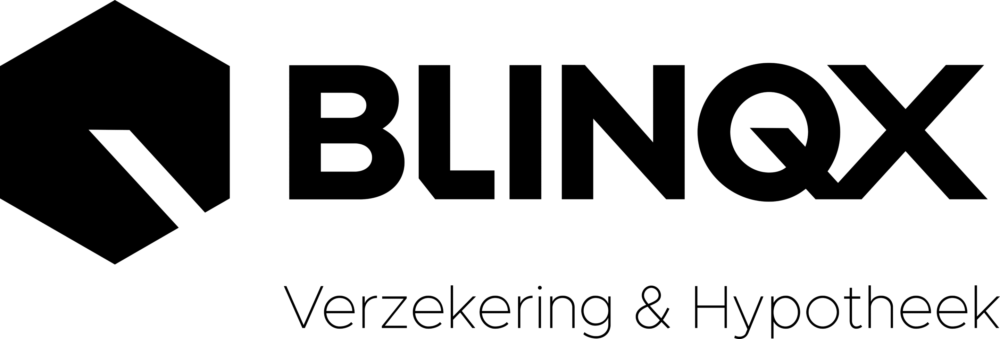

Blinqx Verzekering & Hypotheek verbindt geldverstrekkers, verzekeraars, beleggingspartijen en toeleveranciers met een landelijk netwerk van financieel dienstverleners die dagelijks in eBlinqx werken.
Financieel advieskantoren werken dagelijks in eBlinqx: van hypotheekaanvraag tot polisbeheer, van CRM tot actief klantbeheer. Wie zijn product, dienst of merk bij het intermediair wil laten landen, zit via Blinqx direct aan tafel — in het systeem, op events en in de vakinhoudelijke dialoog.
Proposities worden zichtbaar op het moment dat de adviseur ze nodig heeft: in het adviesproces, bij signalen en in formulieren.
Integraties op HDN- en SIVI AFD-standaarden en API-koppelingen — koppelen zonder maatwerkketen per kantoor.
Van partnerpagina en nieuwsbrief tot Academy, events en de Business Boost-podcast: meerdere kanalen naar dezelfde doelgroep.
Hypotheek, verzekering, volmacht en CRM in één omgeving, met de add-ons eromheen.
Advieskantoren, serviceproviders en volmachten die met onze software werken.
Academy, trainingen, events en podcast — doorlopend contact met dezelfde doelgroep.
Doelgroepen: geldverstrekkers, levens-, AOV-, WW- en schadeverzekeraars, volmachten, pensioenuitvoerders, beleggingspartijen, consumptief krediet, bankgarantie, taxatie, keuring en verduurzaming.
Van bieding tot doorlopend beheer kent de woonklantreis vaste beslismomenten. Wie op het juiste moment in de workflow zit, wint het dossier.
Op het juiste klantreismoment in de workflow zitten is het verschil tussen een portaal en een vanzelfsprekende stap.
Bieders vooraf zekerheid over hun financierbaarheid: leencapaciteitstoetsing, documentherkenning en comfortverklaringen — onder eigen label of samen met uw acceptatieproces.
De consument krijgt één cijfer voor de betaalbaarheid van zijn hypotheek — nu en straks: bij pensioen, bij het einde van de renteaftrek en bij het naderen van de einddatum. Met een persoonlijk rapport met tips over besparingen en verbeteringen. Aanhaken met co-branded tools, contentsponsoring of datalevering.
Hetzelfde principe voor pensioen: helder inzicht in de pensioensituatie, teruggebracht tot één cijfer dat iedereen begrijpt. Bestaande technieken gecombineerd met een cijfer — het nodigt de consument uit zich te verdiepen en past bij doorlopend beheer.
Toets uw propositie vóór lancering met panels, enquêtes en diepte-interviews. Resultaat: een rapport met draagvlakmeting en verbeterpunten.
Introductie bij advieskantoren, serviceproviders en volmachten, ondersteund door het platform waarin zij dagelijks werken — van kennismaking en pilotkantoren tot structurele opname.
Elke propositie is los te nemen of te combineren. In de propositiefit bepalen we samen welk klantreismoment en welke bouwstenen bij uw doelstelling passen.
Grip op renteherzieningen en einde-rentevastperiodes: signalering naar adviseur en klant, met een gestroomlijnd proces voor verlengings- en oversluitmomenten. Retentie voor u, zorgplicht aantoonbaar voor de adviseur.
Partnerpagina, nieuwsbrief- en LinkedIn-bereik, webinars via de Academy, podium op events en een aflevering in de Business Boost-podcast — inclusief de vakinhoudelijke vertaling naar het adviesgesprek.
API-koppelingen in eBlinqx, whitelabel rekentools en Slimme Formulieren in uw huisstijl, en eBlinqx Signalen voor gebeurtenisgestuurd klantcontact. Geen extra portaal, maar een stap in de workflow.
Depot- en portefeuilledata stromen via Connect het klantbeeld in en voeden de planning. Uw propositie wordt rekenbaar in scenario's: doelvermogen, aflossen versus beleggen, inkomen voor later.
Elk beschermingsproduct krijgt zijn vaste adviesmoment: ORV en woonlastenverzekering bij het hypotheekadvies, AOV en WW bij de inkomensanalyse. Scenario's worden doorgerekend op de werkelijke maandlast.
Melding, dossieropbouw en statuscommunicatie in één digitale flow, aangesloten op eBlinqx. Lagere behandelkosten, kortere doorlooptijden en een consistente klantervaring over het kanaal.
Structurele zichtbaarheid en kennispositie: partnerpagina, trainingen en webinars, podium op events en in de podcast. Voor partijen die het intermediair doorlopend willen bereiken.
Blinqx AI Mail, AI Core en Blurrify brengen documentherkenning, dossiercontrole en slimmere klantcommunicatie in de adviespraktijk. Voor ketenpartners: schonere aanleveringen, minder uitval, kortere doorlooptijden. We verkennen graag gezamenlijke toepassingen.
Bieden met Comfort onder eigen label · distributie via het adviseursnetwerk · Renteadministratie.nl voor retentie · marktonderzoek naar acceptatiebeleid · positionering via Hypotheekcijfer.nl (betaalbaarheidscijfer plus rapport)
Vast adviesmoment in de klantreis · scenario's rekenbaar in de Financiële Planner · Premievergelijk en Slimme Formulieren · eBlinqx Signalen voor herijking · adviseurspanel en Academy
Finconnect voor schadeafhandeling · Premievergelijk en volmachtdistributie · naverrekenen en polisbeheer in eBlinqx · eBlinqx Signalen · launchprogramma
Datakoppeling via Connect · rekenbaar in de Financiële Planner · positionering via Pensioencijfer.nl · distributie via het netwerk · adviseurspanel
Aanvragen vanuit het hypotheekdossier · aanhaken bij Bieden met Comfort · Slimme Formulieren in eigen huisstijl · partnerprogramma en events
Integratie in de workflow · signaalgestuurde inzet, bijvoorbeeld verduurzaming · partnerpagina · zichtbaarheid via events en podcast · introductie bij advieskantoren
Dezelfde bouwstenen zetten we in voor pensioenuitvoerders en PPI's, consumptief krediet, uitvaart- en rechtsbijstandverzekeraars, notarissen en serviceproviders.
Zichtbaarheid via het partnerprogramma: partnerpagina, nieuwsbrief en events.
Technische koppeling met eBlinqx: uw dienst als stap in de adviesworkflow.
Samen een propositie bouwen of toetsen: pilot, panel en doorontwikkeling.
Structurele marktbewerking via het adviseursnetwerk, met meetbare doelen.
Banken en verzekeraars werken alleen met ICT-partijen die aantoonbaar in control zijn. Samenwerkingen worden daarop ingericht: contractuele afspraken over informatiebeveiliging, incidentprocedures, exit-regelingen en audit-rechten.
Documentatie ten behoeve van uw eigen uitbestedingsdossier en verantwoording.
Per samenwerking wordt juridisch vastgelegd wie onder welke Wft-vergunning bemiddelt.
Hoe de propositie zich verhoudt tot het provisieverbod, onder meer bij ORV en betalingsbeschermers.
Welke kaders gelden bij beleggingskoppelingen en welke rol de adviseur daarin heeft.
Hoe cliëntenonderzoek wordt ondersteund, met de verwerkersovereenkomst en hosting binnen Nederland en Europa.
Verkennen wat er mogelijk is? Van een eerste kennismaking met het netwerk tot een volledig launch- en distributieprogramma.
Blinqx Verzekering & Hypotheek is niet in één keer bedacht. Het is het resultaat van softwarebedrijven die decennialang naast elkaar aan dezelfde adviespraktijk bouwden — en op enig moment concludeerden dat de adviseur meer heeft aan één keten dan aan acht losse pakketten.
De software voor het financieel intermediair begint als onderdeel van Unit4 — de basis waarop veel kantoren hun eerste geautomatiseerde polisadministratie draaiden.
Faster Forward en de Nationale Hypotheekbond bundelen hun activiteiten. Daaruit groeien Fastlane, PortefeuilleSignalen, UwKluis, nazorg-formulieren en de rekentools van de Hypotheekbond.
Unit4 Financiële Intermediairs gaat zelfstandig verder als DIAS Software, met ervaren tech-ondernemers als eigenaar. Adviesbox, Finly en Elements horen bij de familie.
De groep neemt een nieuwe naam aan. Per 1 juli komen Faster Forward en de Nationale Hypotheekbond erbij: samen vormen zij het segment Verzekering & Hypotheek.
De vertrouwde namen krijgen hun plek in het portfolio — dezelfde mensen, dezelfde kennis, maar op één fundament en met één routekaart.
Tech-ondernemers Ruud, Ynze, Jelke en Chris starten een nieuwe onderneming met de overname van DIAS Software en Aplaza — de basis van het segment Verzekering & Hypotheek.
Online Groep komt met een overname bij het portfolio, en het concept DIAS ÉÉN voor Hypotheek & Verzekering gaat van start.
De premievergelijker MyTP wordt toegevoegd aan de software van DIAS — vandaag eBlinqx Premievergelijk.
Overname van Finly CRM, Risicomanagement, slimme formulieren en Workflow-software.
Overname van Adviesbox en FinData.
Overname van Faster Forward, de Nationale Hypotheekbond, Fastlane, Dutch Medialab en UwKluis.
Het segment wordt gelanceerd met de alles-in-één oplossing voor financieel dienstverleners: eBlinqx.
Overname van Hippoline.
Overname van FinRust — vandaag de add-on voor financiële planning.
Inkomende e-mail wordt automatisch herkend en gekoppeld aan de juiste klant en het juiste dossier, acties en taken staan klaar en er ligt direct een conceptantwoord. AI Core beoordeelt daarnaast polissen en versnelt de schadeverwerking.
Elke overname bracht kennis en software mee die vandaag op één fundament staat: dezelfde mensen, dezelfde vakkennis, één routekaart.
De merken waarmee het intermediair al jaren werkt zitten nu in dezelfde keten. Dat maakt één koppeling en één afspraak mogelijk waar dat eerder vier leveranciers waren.
Wat vroeger drie systemen waren met drie keer dezelfde klant, is nu één dossier waar iedereen op kantoor uit werkt.
De rekenkracht van de Hypotheekbond, de procesdiscipline van Faster Forward en het CRM van DIAS in één propositie.
Software van andere leveranciers blijft koppelbaar. Je kiest zelf wat je combineert en zit nooit vast.
Eén contract, één supportlijn en één routekaart — in plaats van vier leveranciers die naar elkaar wijzen.
Wat één merk ontwikkelt, komt beschikbaar voor de rest. Denk aan eBlinqx Signalen in het adviespakket en Blinqx AI Mail in het CRM.
De consultants en supportmedewerkers die je kende, werken er nog steeds — nu met een breder portfolio achter zich.
Voor u betekent dat één ingang naar het kanaal: dezelfde propositie landt in het advies, in het beheer en in de communicatie eromheen.
Banking, Insurance & Partners. Eén ingang naar het kanaal.
Plan een gesprek en we brengen samen de kansen in kaart — binnen twee weken een eerste kennismaking.
Mail ons of bel 020 - 758 21 11